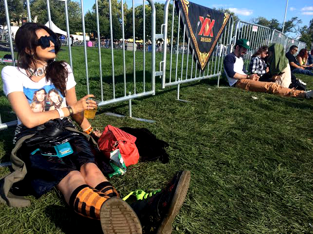
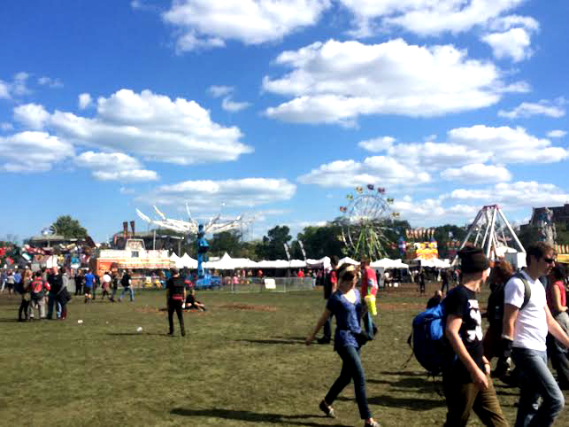
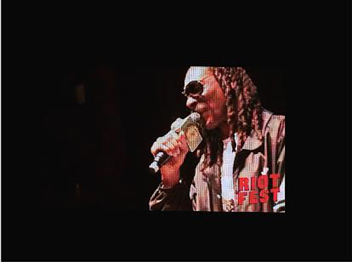
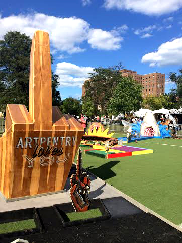
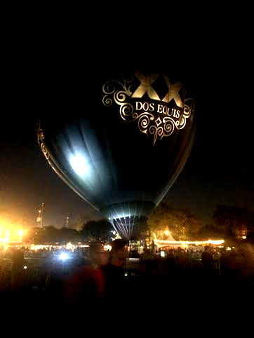

'I Pledge Allegiance to Riot Fest"
Riot Fest is unlike any other concert festival experience. Where else can you get great music acts of many genres, carnival rides, an art inspired putt putt field, a freak show, a hot air balloon, and a mud bath all in one place? The tri-city music festival celebrated it’s tenth year on new grounds. The festival which traditionally was held in Humboldt Park on Chicago’s northside, moved to Pilsen’s Douglas Park this year, and since its inception has expanded from shows at multiple concert venues around Chicago, to the larger scale in parks, and then to other cities, Denver and Toronto.
Riot Fest is far from a riot. It is known for its quirky environment, and renegade rock and hip-hop acts. Concert goers can ride the ferris wheel one minute, see a suicide girl eat fire, a guy stick a screw driver up his nostril and pull it out of his mouth and floss the next, and cap the night off with a great concert. This year's’ lineup included a blast from past, with stages seeing the likes of Ice Cube, fresh off the success of Straight Outta Compton, No Doubt, System of a Down, Iggy Pop, Billy Idol, Modest Mouse, Snoop Dogg, De La Soul and more throughout the weekend.

Music festivals in general always bring out the “freer side” of people, and Riot Fest was a great example of that. The festival is truly one of the more eclectic crowds with different style influences and music tastes. There were piercings, safety pins, and mohawks galore, along with Chicago Bears gear, and rasta wear. One one spectrum you have the young punk, on another you can have the old foagie, the sneakerhead hip-hopper, the freaks, the geeks, and those giving peace and love to Jah, and somehow it works. Hip-hop legends, De La Soul, commented during their set that hip-hop was the best party at Riot Fest, and Tenacious D played “The Greatest Song in the World” to a crowd who probably thought that was the best party at the fest.

The festival also had all the bells and whistles of fair. Rides, and a hot air balloon sponsored by Dos Equis offering FREE rides. When ever in your life will you get the opportunity to ride in a hot air balloon, for free at that? Well turns out, not at Riot Fest either due to inclement weather and strong winds, but props for the attempt, maybe next year. Riot Fest always seems to be ridden with interesting weather, after all it is a festival that comes at the tail end of summer into the muddy waters of fall and Chicago’s weather personality. Last year it rained too, Humboldt Park suffered, and this year Douglas Park was destroyed as well. Boots were definitely the thing. The smell was not. It was like a cow ate a shit ton of festival food and took a shit on the ground, it reeked of manure, but it didn’t dampen the weekend.

What did dampen the weekend however was the highly anticipated Snoop Dogg set. Not only was the rapper over a half hour late, but Riot Fest cut his set short after he played some of the jams, cussed them out, and had his mic and lights cut during a “Forever Young” singalong, which the crowd continued acoustically as they were forced to move over for Modest Mouse, the final night’s headliner, who gave a killer set full of nostalgia as we all floated on.
|  |  |
Go to next page
photo credits: ciera mckissick